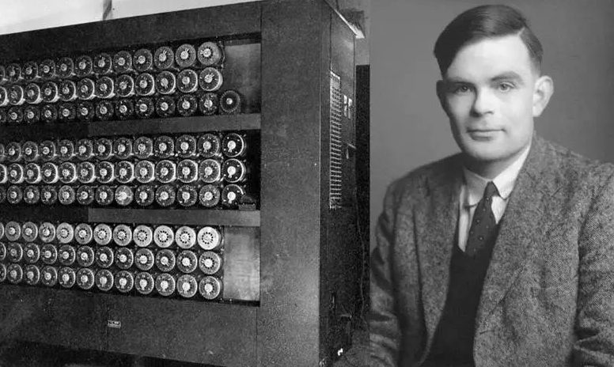

Bu çalışmada, 2. Dünya Savaşı sırasında Almanların mesajlarını şifrelemek için kullandığı Enigma makinesini anlatacağım. Yazı temel olarak üç bölümden oluşmaktadır: bu ilk bölüm permütasyonları, döngüleri, eşlenik permütasyonları, transpozisyonları ve involüsyonları ele aldığım matematiksel ön hazırlık kısmıdır. İkinci bölüm Enigma'nın bileşenlerinin çalışma prensipleri ve sistemin matematiksel olarak incelenmesi üzerine, son bölüm ise Enigma'nın çözülmesi süreci üzerine olacak.

Bir Kümenin Permütasyonları
Gösterim 1. \pi \in \mathrm{Sym}(S) ve x, y \in S olsun. \pi(x) = y'yi x\pi = y olarak yazacağız.
Şimdi \mathrm{Sym}(S) kümesinin bazı özelliklerini inceleyelim. \mathrm{id}_S: S \to S ve tüm x \in S için \mathrm{id}_S(x) = x fonksiyonu birebir ve örten bir fonksiyondur, yani \mathrm{id}_S \in \mathrm{Sym}(S)'dir. Bu \mathrm{id}_S elemanı, \mathrm{Sym}(S) kümesinin birim elemanıdır ve e olarak da yazılır. Şimdi \sigma, \rho \in \mathrm{Sym}(S) olsun. \sigma ve \rho birebir ve örten fonksiyon olduğu için \sigma \circ \rho: S \to S fonksiyonu da birebir ve örten bir fonksiyon olur, yani \sigma \circ \rho \in \mathrm{Sym}(S)'dir. Bu bileşkeyi kısaca \rho\sigma olarak göstereceğiz. Son olarak, eğer \sigma \in \mathrm{Sym}(S) ise \sigma, birebir ve örten bir fonksiyon olduğundan dolayı \sigma'nın tersi \sigma^{-1}: S \to S vardır ve birebir ve örten bir fonksiyondur, yani \sigma^{-1} \in \mathrm{Sym}(S)'dır. Ayrıca ters fonksiyonun tanımı gereği \sigma\sigma^{-1} = \sigma^{-1}\sigma = e eşitliği sağlanır.
İspatı k üzerinden tümevarım ile yapacağız. P(k) önermesi, (\sigma_1\sigma_2 \dots \sigma_k)^{-1} = \sigma_k^{-1}\sigma_{k-1}^{-1} \dots \sigma_1^{-1} eşitliği olsun.
k = 1 için \sigma_1^{-1} = \sigma_1^{-1} olduğundan P(1) açıkça doğrudur.
Şimdi P(2) durumuna bakalım. Bir elemanın tersinin tanımı gereği (\sigma_1\sigma_2)(\sigma_1\sigma_2)^{-1} = e olur. Eşitliği soldan \sigma_1^{-1} ile çarparsak \sigma_1^{-1}(\sigma_1\sigma_2)(\sigma_1\sigma_2)^{-1} = \sigma_1^{-1} elde ederiz. Birleşme özelliğinden ve \sigma_1^{-1}\sigma_1 = e olduğundan dolayı \sigma_2(\sigma_1\sigma_2)^{-1} = \sigma_1^{-1} kalır. Son olarak her iki tarafı soldan \sigma_2^{-1} ile çarparsak (\sigma_1\sigma_2)^{-1} = \sigma_2^{-1}\sigma_1^{-1} elde edilir. Yani P(2) doğrudur.
Şimdi P(k)'nın doğru olduğunu varsayalım ve P(k+1)'i inceleyelim.
şeklinde gruplayabiliriz. P(2) doğru olduğu için bu ifade \sigma_{k+1}^{-1}(\sigma_1 \dots \sigma_k)^{-1} şeklinde açılır. Tümevarım hipotezinden dolayı parantez içi \sigma_k^{-1} \dots \sigma_1^{-1} olarak yazılır. Sonuç olarak:
elde edilir. Yani P(k+1) doğrudur. ∎
Gösterim 2. S, n elemanlı sonlu bir küme; \sigma \in \mathrm{Sym}(S) ve S'nin elemanları x_1, x_2, \dots, x_n olsun. Bu durumda \sigma şöyle gösterilebilir:
Ayrıca, enigma bağlamında S kümesi (alfabe) doğal bir sıralamaya sahip olduğu için, permütasyonu kısaca sadece görüntü kümesini yazarak
biçiminde de gösterebiliriz. Tanım kümesindeki elemanların sabit bir sırası olmadığı durumlarda bu gösterim belirsizlik yaratabileceğinden kullanılmamalıdır.
Birkaç örnek yapalım: S = \{1,2,3,4\} olsun. Bu gösterimde
olur. \sigma, \tau \in \mathrm{Sym}(S) olsun. \sigma ve \tau'yu aşağıdaki gibi tanımlayalım.
Bu durumda,
ve
olur. Görüldüğü üzere \sigma\tau \neq \tau\sigma. Şimdi de \sigma'nın ve \tau'nun tersini bulalım:
olur.
Döngü Kavramı
- 1 \le i < k için x_i\sigma = x_{i+1},
- x_k\sigma = x_1 ve
- x \notin \{x_1, x_2, \dots, x_k\} için x\sigma = x
Gösterim 3 (Döngü). Yukarıda tanımlanan \sigma k-döngüsü (x_1\, x_2\, \dots\, x_k) olarak gösterilebilir. Bu gösterimde kendine giden elemanlar yazılmaz. Ayrıca bu gösterim biricik değildir. (x_1\,x_2\,\dots\,x_k) = (x_2\,x_3\,\dots\,x_k\,x_1) = \dots = (x_k\,x_1\,\dots\,x_{k-1}). Bunların hepsi S kümesinin aynı \sigma permütasyonuna tekabül eder.
Yukarıda örnek olarak verdiğimiz \sigma ve \tau birer 4-döngüdür. Yeni döngü gösteriminde \sigma = (1\,2\,4\,3) ve \tau = (1\,4\,2\,3) olarak yazılır. Bu gösterimde döngülerin tersini bulmak kolaydır. Döngünün elemanları ters çevrilerek döngünün tersi bulunabilir. Bu yaklaşımla \sigma^{-1} = (3\,4\,2\,1) olarak bulunur.
S, n elemanlı sonlu bir küme ve \sigma_1, \sigma_2 \in \mathrm{Sym}(S) ayrık döngüler olsun. \sigma_1 = (x_1\,x_2\,\dots\,x_k) ve \sigma_2 = (y_1\,y_2\,\dots\,y_l) olarak yazılsın. S kümesinden keyfi bir x elemanı alalım. x için üç durum söz konusudur:
Durum 1: x \in \{x_1, x_2, \dots, x_k\} olsun. Yani bir 1 \le i \le k için x = x_i olur. Şimdi eşitliğin iki tarafına bakalım:
- x(\sigma_1\sigma_2) = (x\sigma_1)\sigma_2. Döngünün tanımından dolayı eğer i \neq k ise x_i\sigma_1 = x_{i+1} olur. Bu durumda (x\sigma_1)\sigma_2 = x_{i+1}\sigma_2 olur. Döngüler ayrık olduğu için ve x_{i+1} \in \{x_1, \dots, x_k\} olduğu için x_{i+1}\sigma_2 = x_{i+1} olur. i = k ise x_k\sigma_1 = x_1 olur. Aynı sebepten x\sigma_1\sigma_2 = x_k\sigma_1\sigma_2 = x_1\sigma_2 = x_1 olur.
- x(\sigma_2\sigma_1) = (x\sigma_2)\sigma_1 = x\sigma_1. Döngünün tanımından dolayı eğer i \neq k ise x\sigma_1 = x_i\sigma_1 = x_{i+1} olur. i = k ise x_k\sigma_1 = x_1 olur.
Her iki durumda da sonuç aynı olduğu için eşitlik sağlanır.
Durum 2: x \in \{y_1, y_2, \dots, y_l\} olsun. Durum 1'e benzer şekilde kanıtlanabilir. Simetriden dolayı x\sigma_1\sigma_2 = x\sigma_2\sigma_1 sağlanır.
Durum 3: x \notin \{x_1, \dots, x_k\} ve x \notin \{y_1, \dots, y_l\} olsun. Bu durumda x her iki döngüde de yer almadığı için, iki döngü de x'i sabit bırakır: x\sigma_1 = x ve x\sigma_2 = x olur. Buradan: x\sigma_1\sigma_2 = x ve x\sigma_2\sigma_1 = x olur.
Sonuç olarak, her x \in S için x\sigma_1\sigma_2 = x\sigma_2\sigma_1 sağlandığından \sigma_1\sigma_2 = \sigma_2\sigma_1 olur. \blacksquare
x_1 \in S olsun. O_1 = \{x_1, x_1\sigma, x_1\sigma^2, \dots\} kümesine bakalım. S sonlu bir küme olduğu ve O_1 \subseteq S olduğu için, bu küme de sonludur. Dolayısıyla dizideki elemanlar bir süre sonra tekrar etmelidir. Yani 0 \le i < j olacak şekilde öyle i, j doğal sayıları vardır ki;
eşitliği sağlanır. Eşitliğin her iki tarafına sağdan \sigma^{-i} uygulayalım. Bu durumda x_1 = x_1\sigma^{j-i} olur.
A = \{k \in \mathbb{Z}^+ \mid x_1\sigma^k = x_1\} kümesini tanımlayalım. A \neq \varnothing olduğunu kanıtladık. A \subseteq \mathbb{Z}^+ olduğu için İyi Sıralama İlkesi gereği A kümesinin en küçük elemanı vardır. Bu eleman k_1 olsun. Şimdi x_1, x_1\sigma, \dots, x_1\sigma^{k_1-1} elemanlarının hepsinin farklı elemanlar olduğunu kanıtlayalım.
Bu elemanlardan ikisi aynı olsun. Yani 0 \le i < j \le k_1 - 1 için x_1\sigma^i = x_1\sigma^j olsun. Her iki tarafı sağdan \sigma^{-i} ile çarpalım. Bu durumda, x_1\sigma^{j-i} = x_1 olur. Yani j - i \in A olur. 0 \le j - i < k_1 olduğu için 1 \le j - i < k_1 olur. Bu k_1'in A kümesinin en küçük elemanı olmasıyla çelişir. Sonuç olarak, (x_1\, x_1\sigma\, \dots\, x_1\sigma^{k_1-1}) döngü olur.
Şimdi S \setminus O_1 kümesine bakalım. Eğer S \setminus O_1 = \varnothing ise \sigma permütasyonu tek bir döngüdür. Değilse, x_2 \in S \setminus O_1 alalım ve aynı yöntemi uygulayalım. Bu durumda (x_2\, x_2\sigma\, \dots\, x_2\sigma^{k_2-1}) ikinci bir döngü olur.
Şimdi (x_1\,x_1\sigma\,\dots\,x_1\sigma^{k_1-1}) ve (x_2\,x_2\sigma\,\dots\,x_2\sigma^{k_2-1}) döngülerinin ayrık olduğunu kanıtlayalım. Ayrık olmadıklarını varsayalım. O halde her iki döngüde de bulunan bir x \in S vardır. 0 \le i < k_1 ve 0 \le j < k_2 olmak üzere; x = x_1\sigma^i = x_2\sigma^j olsun. Her iki tarafa sağdan \sigma^{-j} uygulayarak x_2 = x_1\sigma^{i-j} elde edilir.
(i-j) sayısına k_1 ile bölme algoritması uygulayalım. q \in \mathbb{Z} ve 0 \le r < k_1 olmak üzere i - j = qk_1 + r olsun. Bu durumda:
x_1\sigma^{k_1} = x_1 olduğundan, x_2 = x_1\sigma^r bulunur. 0 \le r < k_1 olduğundan bu ifade x_2 \in O_1 anlamına gelir. Ancak biz x_2'yi S \setminus O_1 kümesinden seçmiştik yani x_2 \notin O_1. Bu bir çelişkidir. Sonuç olarak bu iki döngü ayrıktır.
Bu işlemi S kümesindeki tüm elemanlar tükenene kadar sonlu adımda tekrarlayalım ve toplamda r tane ayrık döngü bulalım. Sonuç olarak \sigma permütasyonu:
şeklinde yazılabilir.
Şimdi bu yazılımın, döngülerin sıralanışı haricinde biricik olduğunu kanıtlayalım. \tau_1, \tau_2, \dots, \tau_k ve \rho_1, \rho_2, \dots, \rho_l kendi aralarında ayrık döngüler olmak üzere;
olsun. Şimdi x_1\sigma \neq x_1 şartını sağlayan bir x_1 \in S alalım. Gerekirse döngülerin sıralanışını değiştirerek x_1 elemanının \rho_1 döngüsünde olduğunu varsayalım.
x_1 sabitlenmediği için diğer gösterimdeki \tau'lardan da birinde olmak zorundadır. Yine gerekirse \tau'ların sıralanışını değiştirerek x_1'in \tau_1'de olduğunu varsayalım.
\rho_1 bir döngü olduğu için, x_1 elemanının \sigma altındaki ardışık görüntüleri bu döngüyü oluşturur:
Aynı şekilde \tau_1 de x_1'i içeren bir döngü olduğu için, o da x_1'in \sigma altındaki aynı görüntülerinden oluşmak zorundadır. Yani:
olur. Buradan \rho_1 = \tau_1 elde edilir.
Eşitliğin her iki tarafından bu döngüler sadeleştirilirse:
kalır. Bu işlem, \sigma permütasyonunun sabitlemediği tüm elemanlar bitene kadar tekrarlanırsa, her i için \tau_i = \rho_i olduğu ve k = l olduğu görülür.
Sonuç olarak ayrık döngülere ayrışım biriciktir. \blacksquare
Birkaç örnek yapalım: S = \{1,2,3,4,5\} kümesi üzerinde tanımlı iki permütasyon şu şekilde verilmiş olsun:
Bu permütasyonları ayrık döngülerin çarpımı olarak yazalım. Permütasyonların nereye gittiğini takip ederek döngüleri oluşturalım:
\sigma için: 1 \to 2 \to 4 \to 5 \to 3 \to 1
\tau için: 1 \to 5 \to 1, 2 \to 2, 3 \to 4 \to 3
Şimdi \sigma\tau çarpımını döngü gösterimini kullanarak hesaplayalım. İşlem sırası soldan sağa (x \xrightarrow{\sigma} y \xrightarrow{\tau} z) şeklinde olduğu için:
olur. Elemanları sırasıyla takip edelim: 1 \xrightarrow{\sigma} 2 \xrightarrow{\tau} 2 (Sonuç: 1 \to 2); 2 \xrightarrow{\sigma} 4 \xrightarrow{\tau} 3 (Sonuç: 2 \to 3); 3 \xrightarrow{\sigma} 1 \xrightarrow{\tau} 5 (Sonuç: 3 \to 5); 5 \xrightarrow{\sigma} 3 \xrightarrow{\tau} 4 (Sonuç: 5 \to 4); 4 \xrightarrow{\sigma} 5 \xrightarrow{\tau} 1 (Sonuç: 4 \to 1).
Döngü 1 \to 2 \to 3 \to 5 \to 4 \to 1 olur. Sonuç olarak:
olur. \sigma ve \tau'nun döngü tipini belirleyelim. \sigma için döngü tipi (5), \tau için (2,2,1) olur.
Yazarın Notu: Şu ana kadar bir S kümesinin permütasyonlarını ifade etmek için iki farklı gösterim inceledik. Bu konseptleri bilgisayarda programlarken, elemanlara erişim hızı açısından array tabanlı gösterimi kullanmak çok daha verimlidir. Çünkü S kümesinin elemanlarını bir dizinin indislerine eşleyerek, permütasyonun görüntüsünü O(1) zaman karmaşıklığında bulabiliriz.
Alternatif olarak döngüler, dairesel bağlı liste (circular linked list) veri yapısıyla da ifade edilebilir; ancak bu yapıda belirli bir elemanın görüntüsünü bulmak O(n) zaman karmaşıklığına sebep olabilir. Ben enigmayı simüle eden bilgisayar programımı C ile kodlarken permütasyonlar için array kullandım. S kümesi alfabedeki harflerden oluştuğu için, harflerin ASCII değerlerini kullanarak indisledim.
Bu array yapısını ayrık döngülerin çarpımı formatına dönüştüren algoritma yazmak, okuyucu için güzel bir programlama alıştırmasıdır. Ayrıca iki permütasyonun çarpımını hesaplayan veya bir permütasyonun tersini bulan fonksiyonları kodlamayı da alıştırma olarak deneyebilirsiniz.
Eşlenik Permütasyonlar
Şimdi enigmanın bazı özelliklerini anlamak için gerekli olan oldukça önemli olan eşlenik permütasyonlara geçelim.
Şimdi kanıtlayacağımız teoremler, Enigma'nın kriptanalizi açısından çok önemlidir. Eğer bu teoremleri tam olarak kavrayamazsanız, ileride Enigma kısmındaki mantığı anlamakta zorluk çekebilirsiniz.
Tanımlanan permütasyonun etkisini incelemek için S kümesinden keyfi bir x elemanı seçelim ve \rho^{-1}\sigma\rho ifadesinin x\rho elemanı üzerindeki etkisine bakalım. Üç durum söz konusudur:
Durum 1: x \in \{a_1, a_2, \dots, a_{k-1}\} olsun. Bu durumda bir i indisi için x = a_i diyebiliriz. İşlemi takip edelim:
Bu sonuç, \rho^{-1}\sigma\rho ifadesinin a_i\rho'yi a_{i+1}\rho'ya götürdüğünü gösterir.
Durum 2: x = a_k olsun.
Bu da \rho^{-1}\sigma\rho ifadesinin a_k\rho'yu a_1\rho'ya yani başa götürdüğünü gösterir.
Durum 3: x \notin \{a_1, \dots, a_k\} olsun. Bu durumda x, \sigma döngüsünde yoktur, yani x\sigma = x olur.
Yani x\rho elemanı, oluşan yeni döngüde de sabit kalır.
Sonuç olarak,
olur. \blacksquare
S, sonlu bir küme olmak üzere \sigma, \tau \in \mathrm{Sym}(S) olsun. Eşlenik olmanın tanımından dolayı öyle \rho \in \mathrm{Sym}(S) için \tau = \rho^{-1}\sigma\rho olur. Teorem 3'e göre \sigma ayrık döngülerin çarpımı şeklinde yazılabilir. \sigma_1, \sigma_2, \dots, \sigma_n ayrık döngüler olmak üzere:
olsun. İşlemleri takip ederek:
elde ederiz. Teorem 4'ten dolayı \rho^{-1}\sigma_i\rho ile \sigma_i aynı uzunlukta döngülerdir. Sonuç olarak \sigma ve \rho^{-1}\sigma\rho aynı döngü tipine sahiptir.
Teoremin diğer yönünü kanıtlayalım. \sigma, \tau \in \mathrm{Sym}(S) aynı döngü tipine sahip olsun. Bu iki permütasyonu, uzunlukları eşleşecek şekilde uzunluğu 1 olan döngüleri de dahil ederek ayrık döngülerin çarpımı olarak yazalım:
Döngü tipleri aynı olduğu için her iki ifadede de r tane döngü vardır ve karşılıklı döngü uzunlukları (k_1, k_2, \dots, k_r) birbirine eşittir.
Şimdi \rho \in \mathrm{Sym}(S) permütasyonunu, \sigma'daki elemanları \tau'daki aynı konumdaki elemanlara eşleyecek şekilde tanımlayalım:
Bu tanım, \rho'nun tersinin de \beta_{i,j}\rho^{-1} = \alpha_{i,j} olduğunu gösterir.
Şimdi \rho^{-1}\sigma\rho = \tau eşitliğini kanıtlayalım. \rho^{-1}\sigma\rho ifadesinin herhangi bir \beta_{i,j} elemanı üzerindeki etkisine bakalım:
Bu da
olduğunu gösterir. Dolayısıyla \sigma ve \tau eşleniktir. \blacksquare
Transpozisyonlar ve İnvolüsyonlar
Bu kısım, doğru anahtara sahip bir alıcının Enigma ile şifrelenmiş mesajın nasıl deşifre edildiğini anlamak açısından önemlidir.
Her permütasyon ayrık döngülerin çarpımı olarak yazılabildiğinden, sadece döngülerin transpozisyonların çarpımı olarak yazılabildiğini göstermek yeterlidir.
(x_1\,x_2\,\dots\,x_k) döngüsünü ele alalım. Bu döngünün şu şekilde transpozisyonlara ayrılabileceğini iddia ediyoruz:
Eşitliğin sağ tarafındaki işlemi kontrol edelim. Toplam üç duruma sahibiz.
Durum 1: x_1 için: İlk transpozisyon (x_1\,x_2) ile x_2'ye dönüşür. Diğerlerinde x_2 yoktur. Bundan dolayı x_1 \to x_2 olur.
Durum 2: x_i için (1 < i < k): x_i elemanı (x_1\,x_i) gelene kadar sabitlenir. Bu adımda x_i \to x_1 olur. Hemen sonraki (x_1\,x_{i+1}) adımında ise x_1 \to x_{i+1} olur. Bileşkesini aldığımızda x_i \to x_{i+1} elde ederiz.
Durum 3: x_k için: x_k sadece (x_1\,x_k)'da bulunur ve x_1'e dönüşür. Bundan dolayı x_k \to x_1 olur.
Dolayısıyla (x_1\,x_2)(x_1\,x_3)\dots(x_1\,x_k) = (x_1\,x_2\,\dots\,x_k) olur. \blacksquare
S sonlu bir küme olsun ve birimden farklı \sigma \in \mathrm{Sym}(S) ayrık transpozisyonların çarpımı olarak şöyle yazılsın:
Şimdi \sigma^2 ifadesine bakalım:
Verilen transpozisyonlar ayrık olduğu için birbirleriyle değişmelidirler. Bu özelliği kullanarak aynı transpozisyonları yan yana getirebiliriz:
Her transpozisyonun karesinin birim permütasyon olduğunu kanıtlayalım. Tüm elemanlara \sigma^2'yi uygulayarak:
elde ederiz, yani elemanlar sabitlenir. Dolayısıyla:
olur. \sigma^2 = e eşitliğinin her iki tarafını \sigma^{-1} ile çarparsak \sigma = \sigma^{-1} elde edilir.
Teoremin diğer yönünü kanıtlayalım. \sigma \in \mathrm{Sym}(S) birimden farklı bir involüsyon olsun. \sigma'nın ayrık transpozisyonların çarpımı olarak yazılamayacağını, yani uzunluğu n \ge 3 olan en az bir (x_1\,x_2\,\dots\,x_n) döngüsü içerdiğini varsayalım.
Bu döngüdeki x_1 elemanı için \sigma^2 etkisine bakalım:
\sigma bir involüsyon olduğundan x_1\sigma^2 = x_1e = x_1 olmalıdır. Bu durumda x_1 = x_3 sonucu çıkar. Ancak döngü uzunluğu n \ge 3 olduğu için, döngü tanımı gereği x_1, x_2 ve x_3 birbirinden farklı elemanlardır. Yani x_1 \neq x_3 olur.
Bu bir çelişkidir. Dolayısıyla \sigma, uzunluğu 3 veya daha büyük olan bir döngü içeremez. \sigma birimden farklı bir eleman olduğu için tüm elemanlar sabitlenemez. Dolayısıyla \sigma, ayrık transpozisyonların çarpımıdır. \blacksquare
Bir sonraki bölümde, burada kurduğumuz matematiksel çerçeveyi kullanarak Enigma'nın bileşenlerini (rotorlar, yansıtıcı, fiş panosu) ve makinenin şifreleme/deşifreleme mantığını inceleyeceğiz.
Yorumlar
Beğenmek ya da yorum yazmak için GitHub hesabıyla giriş yapmanız gerekir.